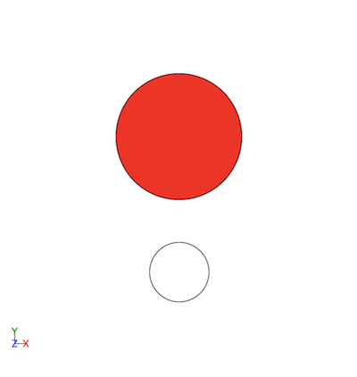
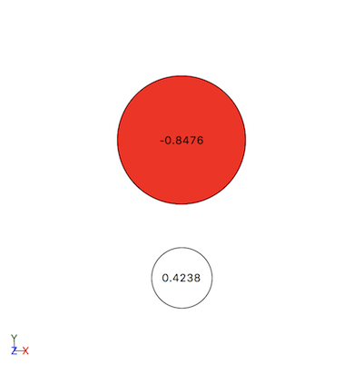
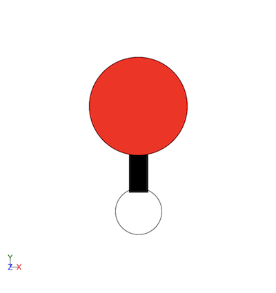
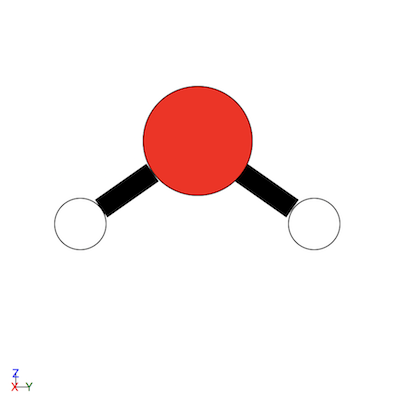
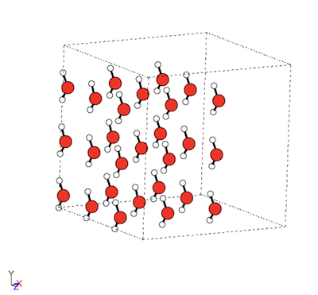

Molecular Visualization¶
After defining the configuration and topology of a Universe, either manually or by reading a configuration file, it is useful to visualize the setup. The view function provides a simple molecular visualizer for establishing the accuracy of a simulation setup. It can be used to visualize one or more Atom objects, one or more Molecule objects, or a Universe.
[ ]:
# Start by simply creating H and O atoms
from MDMC.MD import Atom, Molecule, Bond
H1 = Atom('H', charge=0.4238)
O = Atom('O', position=(0., 0.81649, 0.57736), charge=-0.8476)
atoms = [H1, O]
atom_IDs = [1, 2]
Two different viewers are available:
'X3DOM'¶
This is an inline viewer which displays within a Jupyter notebook. It is ideally suited to <3000 atoms, and may suffer performance issues when displaying more than this. 'X3DOM' is the default viewer when view is called.
'ASE'¶
This is a modified version of the default ASE GUI. It displays in a separate window (which may appear on the desktop), and requires X11 forwarding to be enabled if MDMC is being run from within a Docker container. This viewer has a few additional menu options, which are discussed below.
Both viewers require ASE to be installed.
As mentioned above, calling view without passing viewer uses 'X3DOM' as the viewer, which displays inline in a Jupyter notebook. It should display:
[ ]:
from MDMC.gui import view
view(atoms)
When calling view, either the Atom objects themselves or a list of their IDs can be passed to the same effect:
[ ]:
view(atom_IDs)
Alternatively, the 'ASE' viewer can be selected. This will open an external window, and the execution of any further Jupyter notebook cells will be paused until this window is closed. This execution being paused at the view(atoms, viewer='ASE') cell is denoted by a [*] to the left of the cell.
[ ]:
view(atoms, viewer='ASE')
The ASE GUI should show:

Within the ASE GUI, the View menu has options which assist in checking the setup. For example, View -> Show Labels -> Charges, displays the charges on each atom:

There are also optins to show the elements or atom ID labels.
Bonds are also displayed in both viewers. To see this in action, add a Bond between the atoms and view the atoms again:
[ ]:
HO_bond = Bond((H1, O))
view(atoms)
And using the 'ASE' viewer:
[ ]:
view(atoms, viewer='ASE')

It is important to note that while ``Bond`` objects are displayed, ``BondAngle`` and ``DihedralAngle`` objects are not currently shown.
As mentioned above, Molecule objects can also be passed to view:
[ ]:
H2 = H1.copy(position=(0., 1.63298, 0.))
water = Molecule(atoms=[H1, O, H2])
view(water)
And again with the 'ASE' viewer:
[ ]:
view(water, viewer='ASE')

Finally to visualize a Universe, create one and fill it with copies of the water Molecule.
[ ]:
from MDMC.MD import Universe
universe = Universe(10.)
universe.fill(water, num_density=0.0336)
view(universe)
And again with the 'ASE' viewer, which also delimits the bounds of the Universe with a dashed line:
[ ]:
view(universe, viewer='ASE')
When viewing a Universe, the bounds are delimited by a dashed line. The Universe, tiled with water molecules, should appear as:
